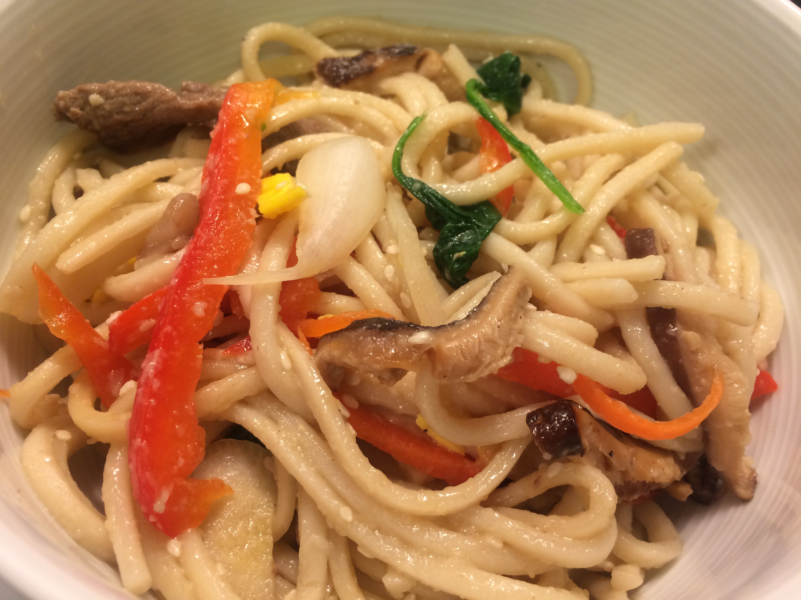

1.5 lb ribeye steak, cut off bone and thinly sliced, about 1 cm thick and 5 cm long
1 large carrot, julienned
1 red bell pepper, julienned
1 small brown onion, thinly sliced
150g shitake mushrooms, stems removed, thinly sliced
300g Korean starch noodles
1 large pack of baby spinach, more doesn't hurt
1 tsp minced garlic
2 large eggs
3 tbsp sesame oil
2 tbsp sesame seeds
Beef Marinade
1/3 tbsp minced garlic
1/2 tbsp sesame oil
1/2 tsp black pepper
1 tbsp soy sauce
Mushroom and Noodle Marinade
2 tbsp brown sugar
3 tbsp honey
1/2 tsp black pepper
6 tbsp soy sauce
1 tbsp sesame oil
Serves Four Total Time: 60 minutes
Dry beef and mix with marinade in bowl, cover, and let sit at room temperature for half an hour. Boil pot of water and dip in spinach for about 15 seconds. Then immediately drain and cool off spinach with cold water.
Squeeze all water out of spinach, and in a bowl mix with some salt, the garlic and 1 tsp sesame oil. Pull apart spinach into smaller pieces if all stuck together. In another bowl mix together mushrooms and 1.5 tbsp of marinade, then let sit.
In a large pot bring water to a boil and add noodles. Cook for about 10 minutes, adding a cup of cold water whenever water starts to boil over. After 10 minutes, cover pot and let noodles sit for 5 minutes, before washing them off with cold water, draining them, and then mixing them with the the remaining noodle marinade in a bowl. On low heat add a touch of olive oil to pan and stir fry the bell pepper, carrot and onion one after the other, pouring out any excess oil in between each fry. Each one should take about 4-5 minutes. If the carrots are not finely julienned they may need a few extra minutes. Then stir fry mushrooms with any excess marinade for about 3 minutes. Remove mushrooms and add to the noodles. Then stir fry the beef for about 6 minutes, or until no more red color is visible. Finally stir fry the noodles for about 2 minutes. You don't have to do this step if you like the noodles a bit softer. Separate the two eggs and in a clean pan, with a bit of olive oil, cook the egg whites over low heat for aobut 2 minutes on each side. Mix together the egg yolks and repeat. Then julien both egg white and egg yolks and add to the noodles. Finally add everything else to the noodles, stir, add 2 tbsp sesame oil, the sesame seeds, and mix thoroughly. Can be served both warm and cold.
